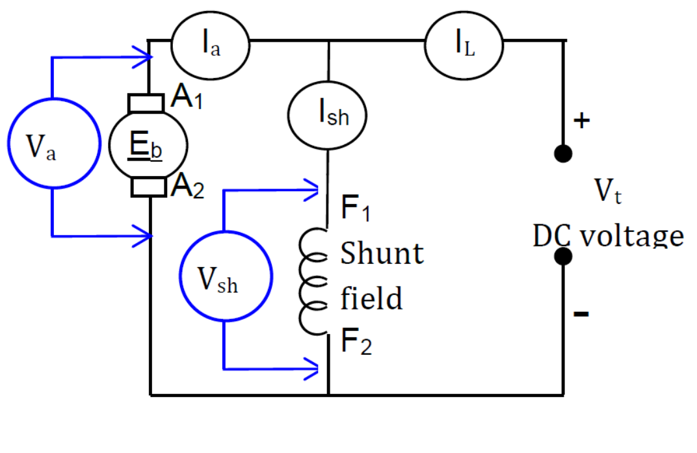

Electrical Machines
A DC shunt motor is an electrical machine in which the field winding is connected in parallel with the armature winding. The motor converts electrical energy into mechanical energy. This Virtual Laboratory allows students to investigate the effect of armature voltage on the speed and electrical parameters of a DC shunt motor.
In a DC shunt motor, the armature winding and shunt field winding
are connected in parallel across the DC supply.
For a constant field flux, the motor speed is approximately
proportional to the armature voltage.
Therefore:
Armature Voltage ↑ → Motor Speed ↑
Practice the circuit connection virtually before performing the wiring on the actual DC shunt motor.

Armature Voltage: 0 V